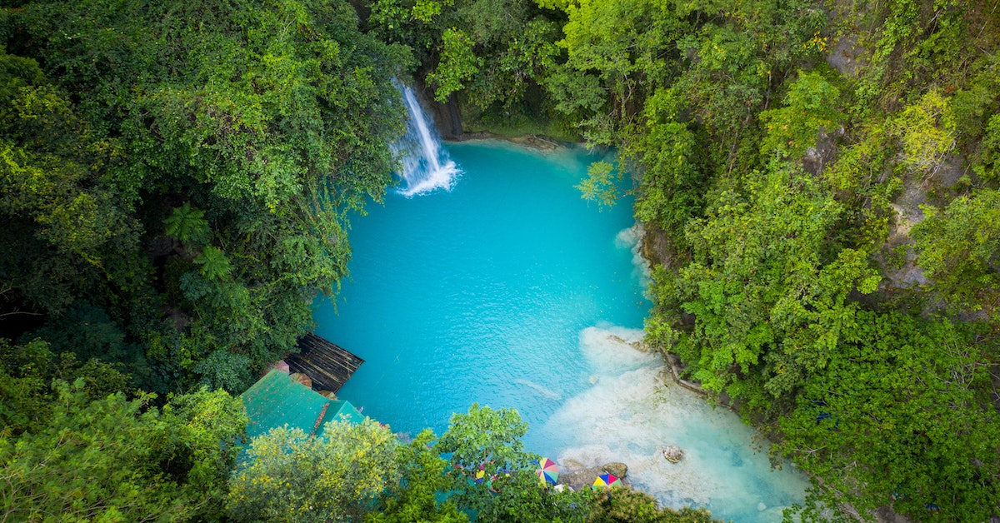

KAWASAN FALLS
The Kawasan Falls is a three-stage cascade of clear turquoise water from mountain springs located
in the jungles of the Cebu island.
The falls are part of the Kawasan River in Badian, Cebu, in the Philippines.
The water from the falls originates from the Kabukalan
Spring and passes through the Kawasan gorge en
route to the Matutinao River and the Tanon Strait. The largest waterfall is about 40
meters high, followed by
smaller cascades and turquoise water pools that invite swimming. It is a popular tourist destination and is
known
for its tranquil and relaxing environment, and the adventurous can even enjoy a raft ride or a dive off
cliffs.